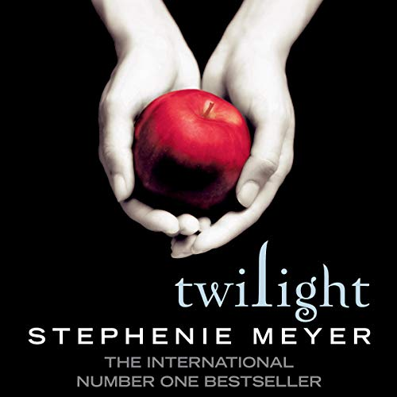
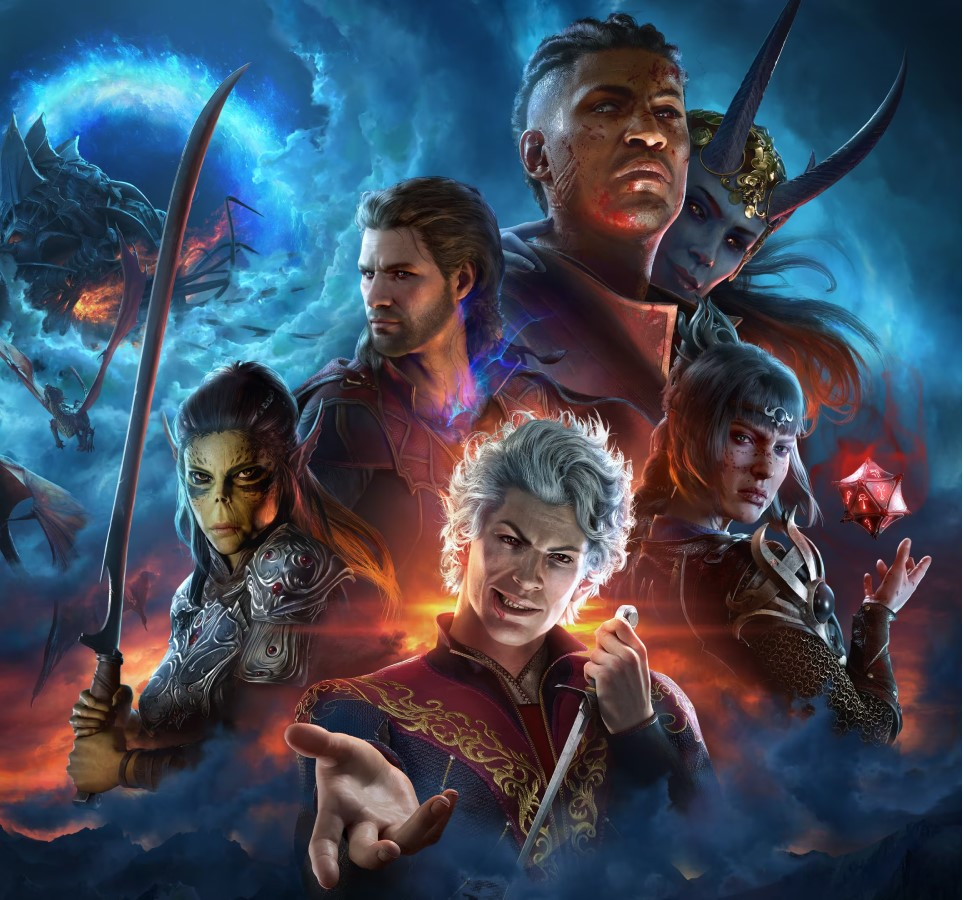

Twilight Book 1 isn't that bad
September 30, 2024 by Paris Wolfe

I remember back when i was 8 watching Twilight for the first time. I was definitely too young to be watching it but with all the hype around it, i couldn't stay away. I absolutely loved those movies but as I got older the weird acting, cringy dialogue and idea of sparkling vampires started to stand out and I couldn't help but cringe at everything. I recognized I probably only liked it because of the cute guys it starred. This all changed though when I received Twilight book 1 as a birthday gift last year. Reading through it, I surprisingly liked the story way more than I expected to. The characters work, Bella and Edward's in particular, felt way more fleshed out and I found myself appreciating what the movie had to offer way more.
After finishing the book, I felt compelled to revisit the movies, particularly the first one, and now I've watched the first twilight movie a total of 17 times. The blue hue and moody atmosphere just gives me a sense of comfort and nostalgia and it's now become one of my ultimate guilty pleasure movies; I can pretty much quote every line from it. All in all though, I can acknowledge that this is still a heavily flawed movie. The acting is sometimes hit or miss and some of dialogue could be way better but I’ve come to embrace that these quirks are what makes Twilight what it is. I say all this not to convince you it is an amazing film but to maybe influence you to give it another chance, maybe read the book and look at it from another perspective like I have.
Baldurs Gate 3 is Really Good
October 1, 2024 by Paris Wolfe

I've been a fan of Dungeons & Dragons since 2020, having played it a bit with friends and being an avid D&D podcasts listener on Spotify, so when I heard about Baldur's Gate 3, I knew I had to give it a try. After purchasing it for 60 bucks, I found myself completely immersed — so much so that I've played for 13 hours straight on more than one occasion. I played as a neutral good elvish wizard alongside the multiple playable companions the game provided such as a Vampire, a Tiefling and a Githyanki. Each of these characters had their own compelling storylines and based on my choices, my relationship would either increase or decrease making everything i did have a personal stake for those around me. The game captures everything I love about D&D, from tactical turn-based combat to the wide variety of role-playing possibilities. I’ve even tried convincing my friends to give it a shot due to how strongly i feel about the game.
One of the highlights for me was when Baldur's Gate 3 won Game of the Year at the 2023 Games Awards. It was a well-deserved win in my opinion, though I do know there was a lot of disappointment among Spider-Man fans that it lost. It too is an excellent game in its own right but for those dismissing Baldur's Gate because of its turn-based combat, I think they're missing out. The combat system may not be for everyone, but it’s incredibly strategic and fits the tone of the game perfectly, making me feel as if I'm actually playing D&D with friends. I think people should have a more open mind about it as it's a truly special story. You have the freedom to create you're own personalized story based on your playstyle and to me, this makes it hands-down one of the best gaming experiences I’ve had in years.